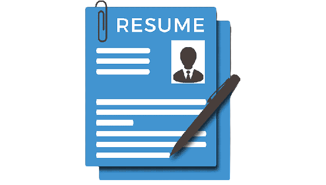

|  |
Formate your resume |
Make it easy to understand,use wide margins,logical
formate,utilized bullets, bold and italic fonts
|
|
Include the accomplishments |
You must always include how you can beneficial to the company
|
|
Make your resume suitable for the industry |
For an engineering or academic related position,make things simple
and direct to the point
|
|
Career summary instead of objectives |
You can replace your 'Objectives' section with a 'Career Summary' so
that you can give an overview of who you truly are
|
|
Use youe network |
Stay connected with a lot of people especially those who are
related to the insudtry you wish to enter
|